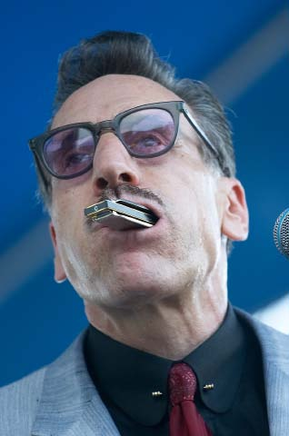

Более 30 лет Рик Эстрин и Чарльз Бэйти были ядром группы Little Charlie & the Nightcats. Эстрин, козырный туз во владении губной гармоникой, был фронтменом группы, исполняя роль отвязного пижона с душой нараспашку. Бэйти своим именем облагораживал все предприятие.

Вместе эта пара гастролировала по Штатами и всему миру, записала 10 альбомов для Alligator Records, и купалась в благожелательных откликах публики и критиков. Все изменилось в январе 2008 года, когда Бэйти объявил о своем решении отойти от дел. Конец партнерства поставило под вопрос будущее Эстрина, он оказался в совершенно в иных условиях работы. Возможно, но неудивительно, именно блюз помог Эстрину найти выход из кризиса: он возродил все, благодаря музыке, которая была его первым вдохновением. Асс губной гармоники начал все с начала."У меня и представления не было, что мне делать дальше, - признается Рик Эстин. - Меня как будто выкинули из родного гнезда, когда я, черт возьми, был уже близок к статусу почетного гражданина. Чарльз все время говорил, что, может быть, он бросит все, я так к этому привык, что уже перестал обращать внимание на эти его слова. По началу он говорил, что надо слегка притормозить, сократить количество концертов. Так что я думал: "Ну и ладно". Потому что я любил этого парня, ребята. Не знаю, почему его, как гитариста, не чтут и уважают так, как он этого заслуживает... Потом он сказал, что бросает все, и это был роковой для меня момент. На меня столько всего навалилось сразу. Кто-то из тех, кто был мне близок, с кем я был в друзьях - Роберт-младший Локвуд и еще один хороший друг - умерли. И моя подруга, с которой мы прожили лет 12-13, и я - расстались. В то время я считал, что мы больше не будем вместе. Вся моя жизнь поплыла, и у меня опускались руки. Но я знал, что я буду продолжать играть".
Эстрин постепенно начал движение к неопределенному будущему. "Когда Чарлз сказал, что хочет притормозить, я подумал, ладно, мне придется поднимать то, что осталось. Если нам придется сократить наше расписание, мне нужно подумать о том, как зарабатывать деньги. Так что я стал работать у Марка Хаммела в программе Blues Harmonica Blowouts, я думал, у меня есть что продать. У меня была концепция сделать самоучитель на видео (DVD), который был бы не похож ни на что, что уже было в этом роде раньше. Так что я сделал его достаточно развлекательным - отчасти это инструкция по игре на губной гармонике, отчасти он философский, и отчасти поверхностный, юмористичный, в стиле Редда Фокса. И это приняли очень хорошо. Но я никогда бы и задницу не приподнял, чтобы сделать это, если бы Чарльз определенно не высказался, что он "выгорел".
Отказ Бэйти от гастролей поставил под вопрос само существование the Nightcats. Эстрин не был готов принять немедленное решение. Пока что он подверг испытанию возможность своих сольных выступлений, сначала в поездках. "Я подумывал стать эдаким низкобюджетным Чаком Берри, разъезжая и давая концерты с местными группами. В этом состоянии неопределенности, когда я еще надеялся, что Чарли решил просто выдержать время, я нашел себе тур по Бразилии и Аргентине с тамошней группой Igor Prado Band".
Результат был вполне ободряющим. "Я обнаружил, что по всему миру есть молодые люди, которые знают мои песни, и им до дрожи в коленках хотелось бы сыграть их со мной".
Первый сольный альбом Эстрина "On the Harp Side" состоял из нескольких традиционных блюзов, записанных в звучании, трудноотличимом от the Nightcats. Проект развивался спонтанно. Он был и терапевтическим средством, и деловым решением. "Я записал его по принципу "сделай сам", простой понятный блюзовый альбом, - говорит Эстрин. - Записывая "настоящий" альбом, я всегда прихожу с готовыми песнями. На этот раз у меня ничего не было. Поэтому в альбоме так много инструментальных номеров. Я говорил: "Сыграем это в "ре". Я отсчитывал темп, и мы просто начинали играть. Но все получилось отлично, потому что все музыканты в студии знали, как играть такую музыку, поэтому ощущение получилось великолепным".
Стоя на своем личном перекрестке, Эстрин вернулся к той музыке, которая когда-то вдохновила его начать играть. "Я был настолько растерян в то время, как будто мне снова надо было присосаться к сиське, - говорит он.- И было так естественно играть что-то, что лежало в основе моей карьеры, всей моей жизни, правда. Эта музыка спасла мою задницу, когда я был молод. Может, это звучит как преувеличение, мелодраматично, но это правда".
Судьба the Nightcats оставалась неясной. И снова Эстрин повторяет, что события развивались сами по себе, и результат оказывался более чем удачным. "Одно особенно огорчало меня - да и Чарли тоже, я так думаю - то, что во многих отношениях у нас тогда был наилучший состав группы за все годы. У нас и раньше были группы с отличными музыкантами, но не было той химии и той совместимости усилий. И J.Hanson (ударные), и Lorenzo Farrell (бас-гитара) сказали мне, что им хотелось бы продолжать. Но я не знал, кого взять (в гитаристы). Очевидным выбором был бы Rusty Zinn, потому что он мой приятель, и мы уже играли вместе, и он великолепен. Но он занимается своей музыкой, а я знал, что хочу кого-то, кто всю свою душу вложит. И тогда Kid Andersen оказался свободным".
Крис Андерсен по прозвищу Kid ("Малыш"), родился в Норвегии в 1980 году, через три года после того, как Эстрин и Бэйти собрали the Nightcats. Андерсен прошел через группы Terry Hanck и Charlie Musselwhite, и выпустил три занимательных сольных альбома с тех пор, как переехал в Калифорнию. "Я ушел от одного неповторимого гитарного гения к другому неповторимому гитарному гению безо всякой е......тни между делом", - говорит Эстрин о включении Андерсена в состав the Nightcats.
Начало общения с Андерсеном было связано просто со счастливым случаем. Эстрин рассказывает: "Вообще-то он позвонил мне поговорить о чем-то другом, но к тому моменту он уже ушел от Чарли Масселуайта, и ничем особо не был занят. Мне же это показалось очевидным и идеальным решением, тем самым, что мне и следовало бы принять. У Кида была непредсказуемость, которой обладал Чарли: в нем была эта искра. Его корни в блюзе, но его стиль сильно отличается от стиля Чарли".
Группа собралась в студии для записи, которая вылилась в альбом 2009 года "Twisted". Андерсен играл на гитаре и электрооргане Hammond. Это сдвинуло и расширило музыкальную палитру the Nightcats, добавив ощущение ритм-энд-блюза 60-х среди прочих новшеств. Андерсен был звукоинженером на записи "On the Harp Side", у него было какое-то разболтанное оборудование, и на записи он работал просто по инстинкту. На записи "Twisted" он уже был сопродюсером Рика Эстрина.
"Крис великолепен! Я предсказываю, что придет день, когда он станет по-настоящему востребованным продюсером, - говорит Эстрин. - Он становится все лучше и лучше. То, что он узнал за время, прошедшее за время после записи того альбома, к моменту, когда мы записывали "Twisted", он по-настоящему хорошо знал свое дело. И он может такое расслышать, что даже собаки не услышат!"
Пройдя 40 лет жизни в блюзе, Эстрин по-прежнему получает удовольствие от успехов в артистическом развитии и коммерческой состоятельности. "Я думаю, всегда будет нечто настоящее. Всегда будет кто-то, кто будет играть где-то остатки (блюза), - говорит он. - Но я знаю таких великолепных ребят, которые едва сводят концы с концами. Это просто позор. Когда мы были готовы прорваться к первому успеху и начать первые гастроли по Соединенным Штатам, клубная сцена была такой, что мы могли играть по пять-шесть концертов в неделю, и публика приходила, и мы могли заработать на жизнь. Тогда для отдыха не особо много было других возможностей. Теперь всё по-другому. И я просто счастлив, что я всё еще здесь, всё еще в игре. Я оглядываюсь на то, что я когда-то выбирал для себя, и на прочую фигню, которую я делал - и сравниваю с тем, кто я сейчас, я прямо могу сказать вам: у меня все получилось. Я самый счастливый чувак в мире.
Перевод А.Евдокимова
Журнал Blues Revue, #121